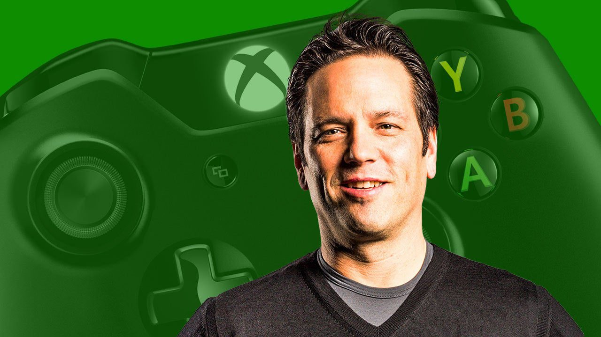
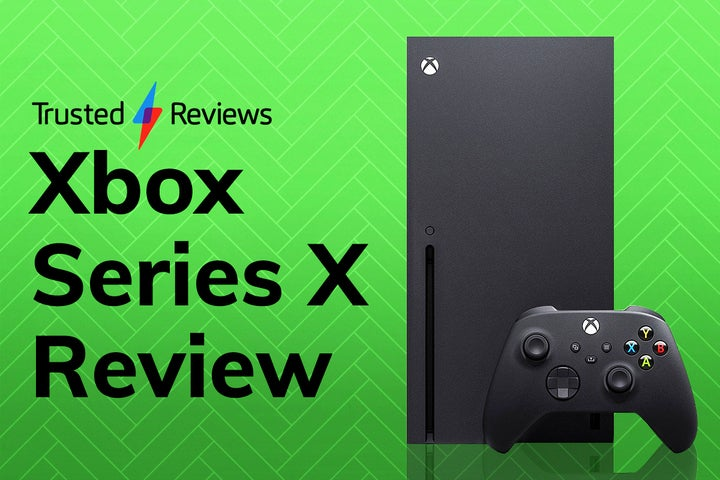
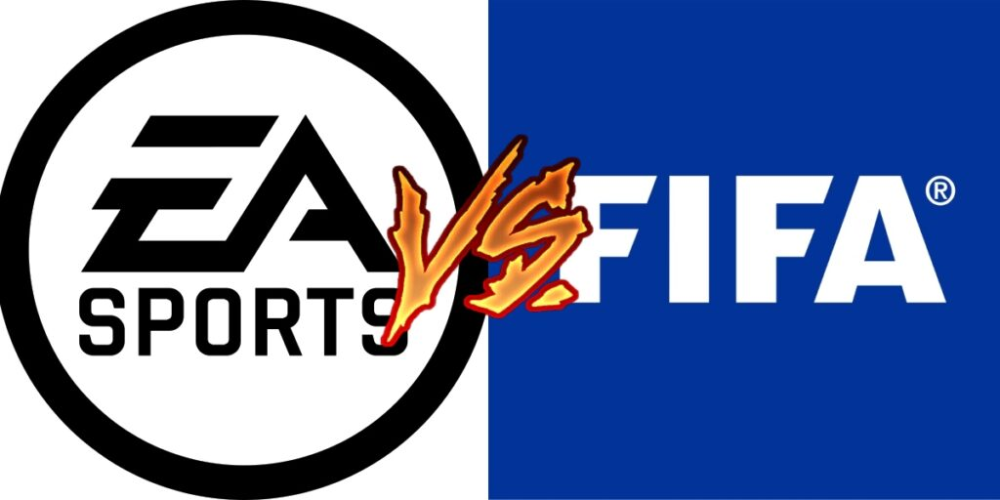

Ultimas noticias sobre Gaming
Fecha: 29 nov
Categoria: Gaming

En 2020 todos pensamos por un momento que Cyberpunk 2077 estaría destinado a aparecer en la lista de
los nominados para el GOTY 2021, esto después de las altas expectativas y los retrasos que en su
momento se creía eran para que el juego se lanzara con la menor cantidad de errores posibles.
Claro que la historia fue totalmente diferente, y desde un inicio CD Projekt Red dejó claro a todos
los estudios y desarrolladores lo que no se debe hacer para el lanzamiento de un juego.
El estudio anunció hace unos días que Cyberpunk 2077 sería recordado como uno de los mejores juegos
de la historia a largo plazo debido a su mundo abierto y a las mejoras que se han implementado en
los últimos meses, sin embargo, hay quienes dudan que esto en realidad vaya a ser una realidad.
Fecha: 26 nov
Categoria: Gaming

Llega el fin de año y con este las listas de las mejores películas, canciones, series de televisión,
y por supuesto de videojuegos; Phil Spencer, cabeza de Xbox nos reveló cuál es su GOTY 2021.
Hace unos días Xbox estaba de manteles largos por los 20 años de la marca, y Phil Spencer estuvo
durante una participación especial de Major Nelson y dijo que Psychonauts 2 es su GOTY.
Psychonauts 2 es probablemente mi juego del año […] simplemente es un juego fantástico desde mi
punto de vista, como fan de Double Fine, es el mejor juego que han lanzado.”
Phil Spencer, jefe de Xbox
Fecha: 24 nov
Categoria: Gaming

Calidad antes que cantidad: Halo Infinite
Staten fue muy claro al explicar que él prefiere la calidad del juego antes que salir antes lleno de
bugs y cosas por arreglar dentro de Halo Infinite.
Trabajo en Halo, pero sigo siendo un fan de Halo. La campaña cooperativa es esencial para la
experiencia. Jugar Halo con tus amigos es jugar Halo, ya sea en multijugador o en campaña, esta fue
una de las decisiones más difíciles de tomar”.
Joseph Staten, director de Halo Infinite
Luego del retraso del juego por un año y ahora con el retraso de la campaña cooperativa, Staten nos
deja claro que para 343 Industries lo más importante es entregar un producto a la altura de sus
fans.
Fecha: 24 nov
Categoria: Gaming

Con la crisis de componentes azotando a la industria tecnológica y con la confirmación de que la
producción de consolas seguirá siendo menor, la necesidad de hacerse de una unidad Xbox Series X
aumenta con un dejo de desesperación.
Para los entusiastas de Xbox, cualquier noticia relacionada con disposición de unidades Xbox Series
X es oro y por ello es importante hablar de una campaña que emprendió Microsoft y que a más de una
persona le arrancará una sonrisa.
La compañía está contactando directamente a través de correo a usuarios con Cuenta Microsoft para
ofrecerles un bundle de Xbox Series X que forma parte de un lote limitado y que está al alcance de
un enlace personalizado que la misma Microsoft proporciona en el cuerpo del texto.
Estos bundles estarán disponibles bajo una lógica de “primero en tiempo, primero en derecho”, es
decir, no habrá preferencia de ningún tipo, así que conforme más te tardes en dar clic al enlace,
más lejos estarás en la cola.
Fecha: 19
Categoria: Gadgets

A una semana de haber llegado al mercado, la colección Grand Theft Auto: The Trilogy – The
Definitive Edition se erigió como un cúmulo de bugs, errores de rendimiento y decisiones artísticas
cuestionables que reflejó poco respeto al legado de los tres títulos remasterizados que la
conforman: GTA III, GTA Vice City y GTA San Andreas.
Prensa especializada y fans están de acuerdo con que, si bien los tres juegos presumen renovaciones
visuales, una nueva mecánica de apuntado y un atractivo sistema de iluminación, al final son
aspectos que no solo fueron mal implementados, sino que además impactan negativamente en la
experiencia general de juego.
Fecha: 19 nov
Categoria: Gaming

Desde hace décadas EA es la única compañía con licencia para lanzar al mercado juegos oficiales de
FIFA, pero ahora el futuro de la franquicia está en duda, pues todo indica que estos derechos ya no
serán renovados.
Lo que durante semanas circuló en calidad de rumor ahora fue confirmado por la misma EA, cuyo
director de marca de EA Sports FIFA, David Jackson, declaró al Financial Times que en este momento
tiene lugar una amarga disputa con FIFA por las negociaciones de la licencia.
“No sabemos si seguiremos con FIFA como socio de derechos de nombre”, dijo Jackson antes de
adelantar que un rebranding no es una posibilidad descabellada.
Se sabe que EA registró una nueva IP llamada EA Sports FC y que presumiblemente será el nombre de
sus próximos simuladores anuales de fútbol. Para abonar a este escenario, Jackson dijo “FIFA tiene
muchos, muchos jugadores; no vemos por qué eso habría de cambiar en el futuro”.